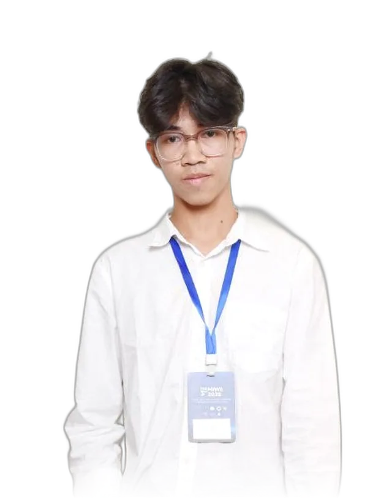
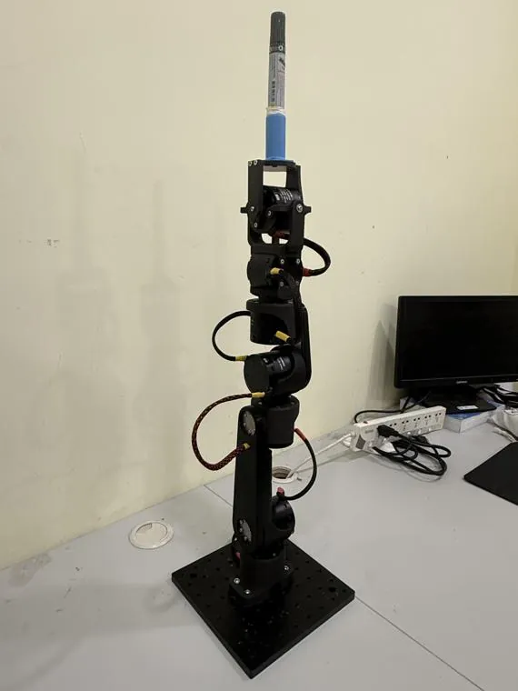
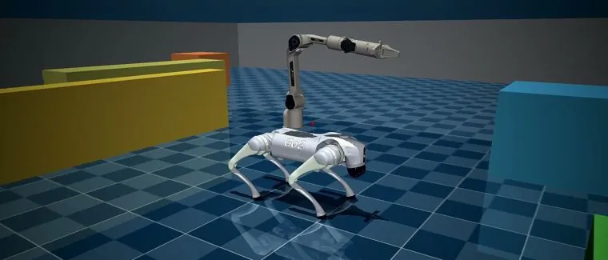
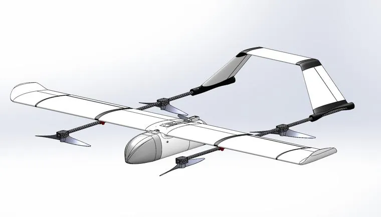
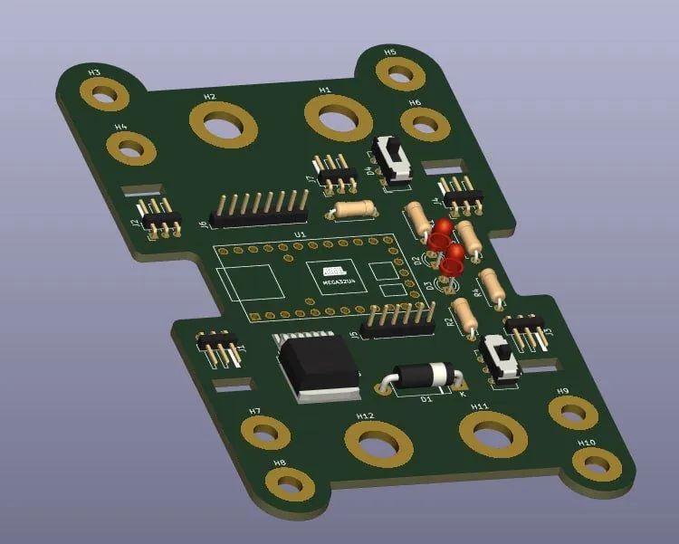
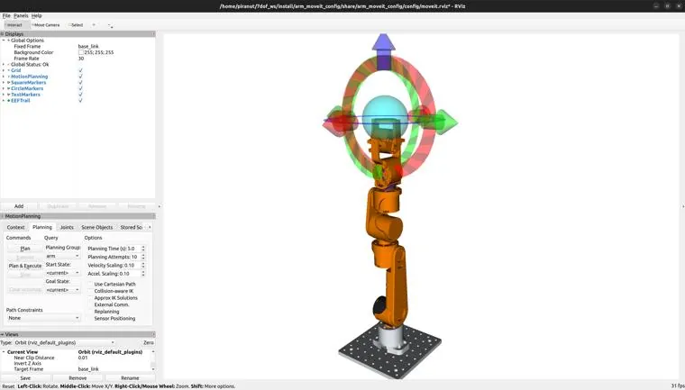
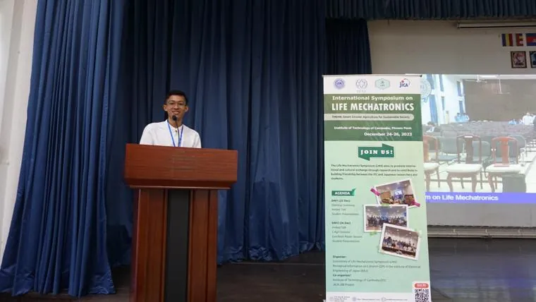
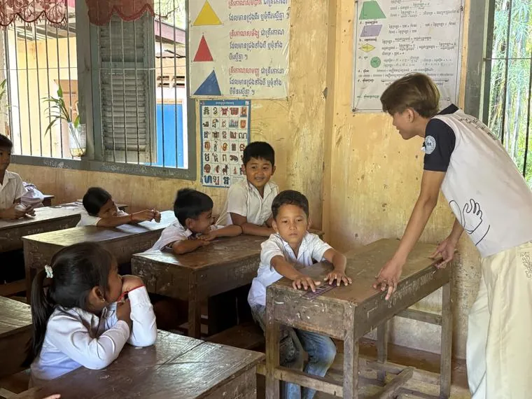

Engineering flight

- Based in
- Toul Kork, Phnom Penh
- Focus
- UAV / drone systems
- Languages
- Khmer · English
- Status
- Fresh graduate
One system at a time. I'm a Robotics and Automation Engineering graduate and a former member of the DCLab UAV team at the Institute of Technology of Cambodia, where I designed, built and flew the systems I studied.
My work spans the full stack of a flying machine, from mechanical design and flight controllers to AI-driven autonomy on Jetson Nano and Raspberry Pi. Outside the lab I mentor aspiring engineers and teach robotics, because Cambodia's young engineers should take off even faster.
Education
- Robotics & Automation Engineering, ECAM LaSalle, Lyon 2024–2026
- Industrial & Mechanical Engineering, Institute of Technology of Cambodia 2021–2026
- Santhormok High School, Phnom Penh 2015–2021
Tools
- SolidWorks · Solid Edge 3D CAD
- AutoCAD Drafting
- KiCad PCB design
- MATLAB Simulation
- Python · OpenCV AI / vision
- C++ Embedded
- ROS · MoveIt · MuJoCo Robotics
- MS Office Reporting
Selected work:
7-DOF robotic manipulator       
Seven projects from the Dynamics & Control Laboratory at ITC, an internship at Camflytec, and the classroom. The first two have their own pages.
Project log
| Project | What I did | Tools |
|---|---|---|
| Thesis7-DOF Robotic Manipulator Read the case study |
Designed and built a seven-degree-of-freedom arm end to end: mechanical design, kinematics, motion planning and control. | SolidWorks · MATLAB · ROS · MoveIt |
| Internship, CamflytecQuadruped Robot — Unitree Go2 Open the control centre |
Development on the Unitree Go2 platform: locomotion, SLAM & navigation, and arm manipulation in MuJoCo simulation, with embedded thermal imaging. | Unitree Go2 · MuJoCo · Thermal imaging |
| DCLabVTOL UAV Platform | Hybrid fixed-wing aircraft with quad lift rotors, for vertical take-off and landing with the range and speed of a wing. | SolidWorks · UAV · Aerodynamics |
| DCLabFlight Controller & Smart Driver | Custom UAV flight-controller board built around the ATmega32U4: schematic capture, PCB layout and embedded firmware, designed in KiCad. | KiCad · C++ · Embedded |
| DCLabMotion Planning & Simulation | Trajectory planning and validation of the manipulator in simulation before a single motor moved on the real hardware. | ROS · MoveIt · Python |
| Research4-Axis CNC Foam Cutter | Built and optimized a precision foam cutter for wing cores, presented at the International Symposium on Life Mechatronics. | CNC · Mechatronics |
| TeachingRobotics Outreach | Volunteer robotics teacher at Passerelles Numériques and mentor at Wander in Tech, passing the toolkit on to younger students. | Teaching · Mentorship · STEM |
Beyond the lab
From 2022 to 2025 I worked in the Dynamics & Control Laboratory at ITC, where I also applied machine learning to autonomous drones (movement and object detection, auto-landing on Jetson Nano and Raspberry Pi) and used OpenCV for face detection and tracking. I spent a study semester at ECAM LaSalle in Lyon, studied jet-engine simulation as an intern at Lanmei Airlines, and joined a hands-on workshop at Kasetsart University in Thailand. I've visited Delta Electronics, MinebeaMitsumi, Phnom Penh Airport and Coca-Cola, and competed in the Techno Innovation Challenge and the 10th Engineering Innovation Challenge in Singapore. Earlier builds include a 4-axis robotic arm, small 3- and 4-wheel cars, a line-tracking car, an autonomous grass cutter and water-pump automation. I teach robotics as a volunteer at Passerelles Numériques, mentor at Wander in Tech, and led my high-school STEM team for three years. Get in touch
Contact
References
Dr. Srang Sarot Head of the Dynamics & Control Laboratory, ITC
Dr. Yvon Chalm CEO, K-box Solution
Contact details for both references are available on request.